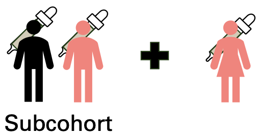
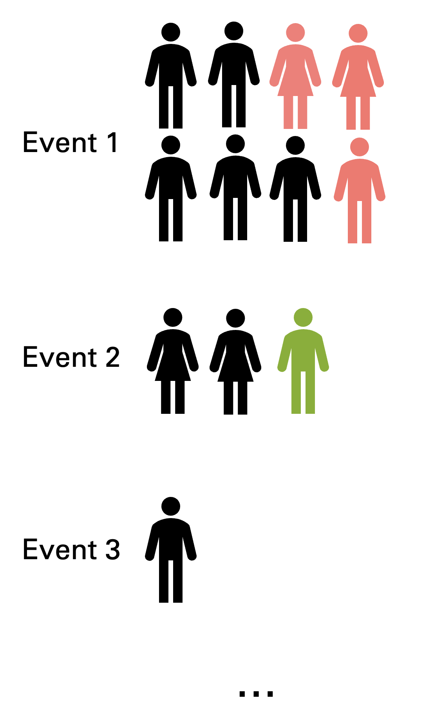
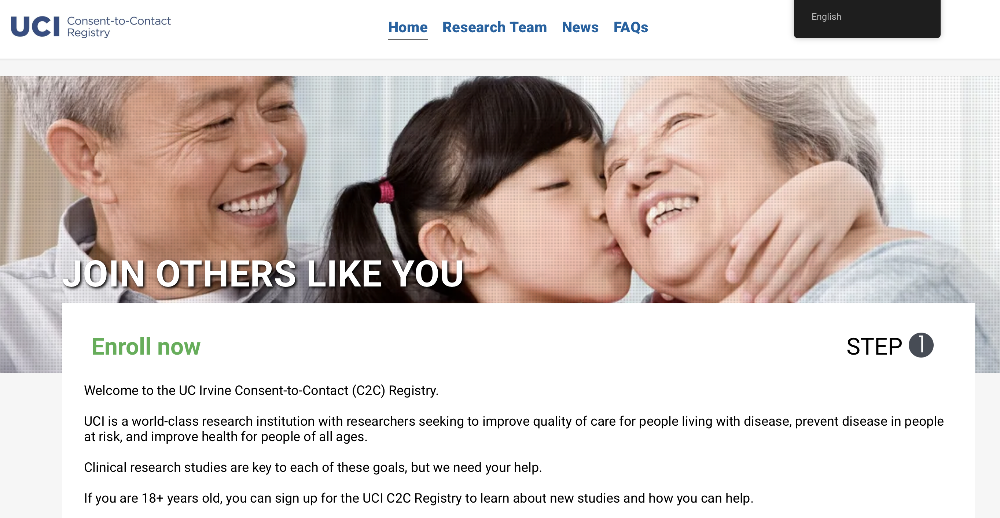

Research
In my dissertation, I am interested in exploring methods to adequately address challenges in assessing subgroup effects while maintaining valid inference across the full study population. Additionally, I enjoy working on innovative trial designs and collaborating with scientists on topics in Alzheimer’s disease and recruitment science.
Below are my current research interests and projects.
Improving efficiency through stratified sampling in case-cohort designs

Motivated by challenges in Alzheimer’s disease biomarker research, we investigated stratified case-cohort designs under the Cox proportional hazards model to better assess effect modification of biomarker effects in rare subpopulations. We characterized subgroup effects with higher power and greater efficiency while maintaining valid inference in the marginal model, and demonstrated when it is most recommended to perform such sampling.
- Xu Y., Grill J. D., & Gillen D. L. Case-cohort designs to improve efficiency for detecting effect modification. (Under review).
Efficient sampling, estimation, and study design in recurrent events case-cohort designs

To better perform recurrent events case-cohort designs analysis (such as in modelling Alzheimer’s disease progression), we first examine two general designs for conducting sampling: “pooled” and “event-specific” sampling. We then derive results to compare the efficiency of these designs and their impact on efficiency and statistical power, especially in later event occurrences.
- Joint Statistical Meetings. Contributed talk “Increasing efficiency in case-cohort designs for recurrent events analysis”. (Nashville, TN, August 2025.)
Bayesian dynamic borrowing in trial design

During my biotech internship, I performed simulations for planning a trial using Bayesian dynamic borrowing models with survival outcomes. We evaluated power, type I error, and other operating characteristics to inform trial design decisions, including planning an adaptive design with interim analyses.
Group sequential methods for subgroup analyses
I am interested in developing group sequential methods to examine power and efficiency gains when switching randomization strategies at interim analyses.
Association of research attitudes and retention in a local registry

Recruitment registries are maximally effective when registrants are retained. Our analyses found that attitudes towards biomedical research, among other factors, were associated with retention behaviors in a local recruitment registry. These findings may be useful to develop strategies to improve retention in this and other registries.
- Witbracht, M., Xu, Y., Morgan, O. B., Salazar, C. R., Hoang, D., Kind, A., Gillen, D. L., & Grill, J. D. (2025). Research Attitudes Questionnaire scores and retention in a recruitment registry. Journal of Alzheimer’s Disease, https://doi.org/10.1177/13872877241302422. Link .